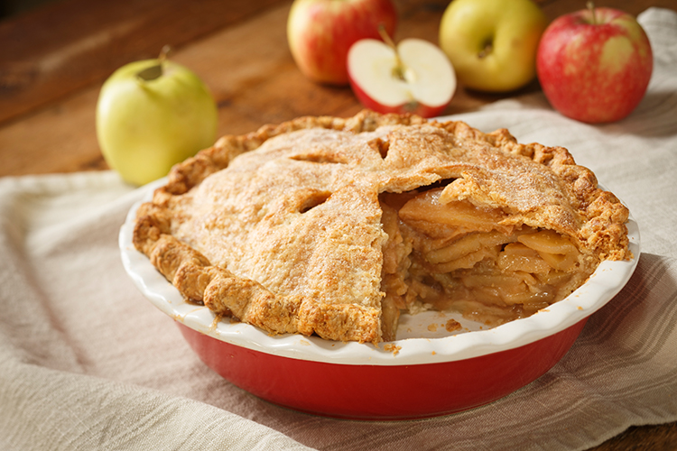

Apple Pie
Apple pie is a time-honored treat that warms the heart. It starts with a golden, flaky crust, cradling a sweet filling of freshly sliced apples from the orchard. We sprinkle in some sugar and a dash of cinnamon—just enough to bring out the natural sweetness. There’s nothing like pulling a warm pie from the oven after a long day in the fields. Serve it up with a scoop of vanilla ice cream, and you’ve got a slice of home right there. It’s a simple pleasure that brings family and friends together, especially during harvest time.
Ingredients
Eggs
Apples
Cinnomin
Sugar
Vanilla Extract
Steps
- Preheat the Oven Preheat your oven to 425°F (220°C).
- Prepare the Apples: In a large bowl, mix the sliced apples with sugar, cinnamon, nutmeg (if using), flour, and lemon juice. Let it sit for about 15 minutes.
- Roll Out the Crust: Roll out the bottom pie crust and fit it into a 9-inch pie pan.
- Add the Top Crust: Roll out the top crust and place it over the filling. Seal the edges and cut slits in the top for steam to escape.
- Apply Egg Wash: Brush the top crust with the egg wash for a golden finish
- Bake the Pie: Bake in the preheated oven for 15 minutes, then reduce the temperature to 350°F (175°C) and continue baking for 30-35 minutes, or until the apples are tender and the crust is golden brown.
- Cool and Serve: Let the pie cool for at least 2 hours before slicing. Serve warm, preferably with vanilla ice cream!
- Enjoy your homemade apple pie!
